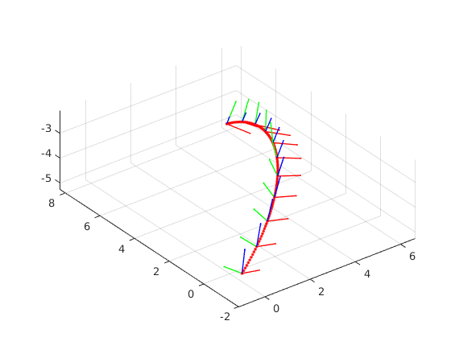
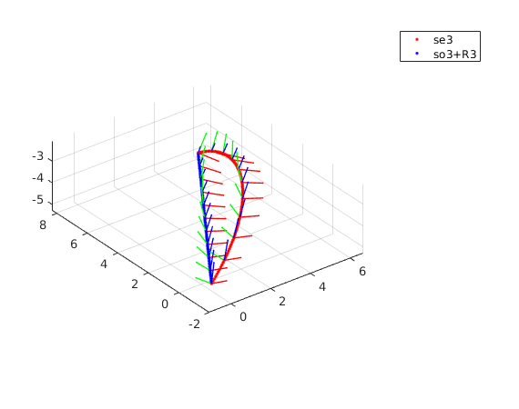

On manifold interpolation demo
Contents
Demo 1
close all % se3 interpolation example % two random poses pose=[ -1.0000 -2.0000 -4.0000 0.1059 -0.2393 -0.1357 0 6.0001 8.0000 -5.0000 -0.8050 0.012 0.9373 1]; % draw trajectory figure(1) for t=0:0.01:1 [drotm dtrans] = traj_interpol(pose', t,'linear','ROTVEL_se3'); a=plot3(dtrans(1),dtrans(2),dtrans(3),'.r'); hold on end % draw coordinate frames for t=0:0.1:1 [drotm dtrans] = traj_interpol(pose', t,'linear','ROTVEL_se3'); Ttmp = [drotm dtrans; 0 0 0 1]; hold on draw_axis_from_T(Ttmp,'',1,1,0); hold on end axis equal grid on
Demo 2
three random poses. to show what is c0 continuity problem
pose=[
-1.0000 -2.0000 -4.0000 0.1059 -0.2393 -0.1357 0
6.0001 8.0000 -5.0000 -0.8050 0.012 0.9373 0.5
9.0001 4.0000 -9.0000 -01.1050 0.412 0.3373 1 ];
% draw trajectory
figure
for t=0:0.01:1
[drotm dtrans] = traj_interpol(pose', t,'linear','ROTVEL_se3');
plot3(dtrans(1),dtrans(2),dtrans(3),'.r');
hold on
end
% draw coordinate frames
for t=0:0.1:1
[drotm dtrans] = traj_interpol(pose', t,'linear','ROTVEL_se3');
Ttmp = [drotm dtrans; 0 0 0 1];
hold on
draw_axis_from_T(Ttmp,'',1,1,0);
hold on
end
axis equal
grid on

Demo 3
show the difference between se3 interpolation and so3+R3 interpolation
% two random poses pose=[ -1.0000 -2.0000 -4.0000 0.1059 -0.2393 -0.1357 0 6.0001 8.0000 -5.0000 -0.8050 0.012 0.9373 1]; % draw trajectory figure(1) for t=0:0.01:1 [drotm dtrans] = traj_interpol(pose', t,'linear','ROTVEL'); b=plot3(dtrans(1),dtrans(2),dtrans(3),'.b'); hold on end % draw coordinate frames for t=0:0.1:1 [drotm dtrans] = traj_interpol(pose', t,'linear','ROTVEL'); Ttmp = [drotm dtrans; 0 0 0 1]; hold on draw_axis_from_T(Ttmp,'',1,1,0); hold on end axis equal grid on legend([a b],'se3','so3+R3');